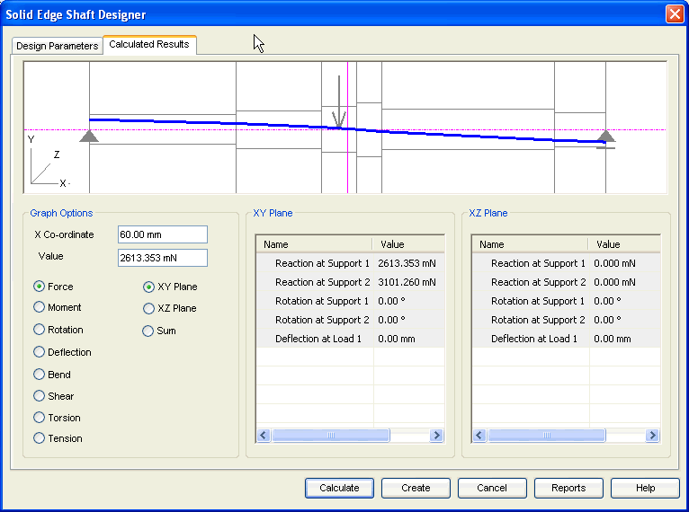

Calculated Results tab
The Calculated Results tab provides the options you use to view results and to control the graphical output.

- Graphic area
-
This contains the graphical representation of the selected output component. Use the digitizer (pink line) to determine the value of the graph at any position.
- Graphic options
-
Use this area to choose which graph has to be displayed in the Graphical Area. The X Co-ordinate and Value give the position of the digitizer in the graphic Area.